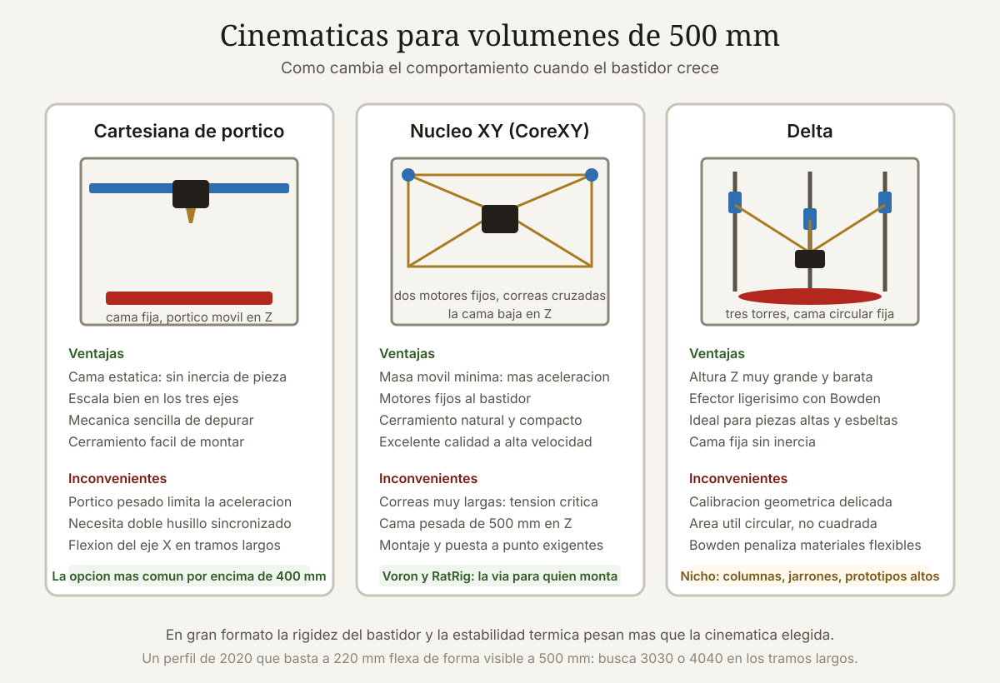

Qué cubre esta guía
Qué cambia realmente al pasar a 500 mm
La intuición dice que una impresora de 500 mm es una de 250 mm agrandada. La realidad es que casi todas las magnitudes relevantes escalan mal, y varias lo hacen al cuadrado o al cubo.
| Magnitud | 220 × 220 × 250 mm | 500 × 500 × 500 mm | Factor |
|---|---|---|---|
| Volumen de construcción | 12,1 litros | 125 litros | ×10,3 |
| Superficie de cama | 484 cm² | 2.500 cm² | ×5,2 |
| Potencia de cama a 60 °C | 200 a 350 W | 800 a 1.500 W | ×4 a ×5 |
| Tiempo de calentamiento a 100 °C | 4 a 6 min | 15 a 30 min | ×4 |
| Material de una pieza que llena el volumen | ~1,5 kg | ~14 kg | ×9 |
| Tiempo de una impresión que llena el volumen | 30 a 50 h | 200 a 400 h | ×8 |
| Coste de un fallo al 80 % del trabajo | 2 a 5 USD | 40 a 90 USD | ×20 |
El problema del alabeo crece con la base
La contracción térmica del material es proporcional a la longitud. El ABS se contrae en torno al 0,7 % al enfriarse; en una pieza de 100 mm son 0,7 mm, molestos pero manejables. En una pieza de 450 mm son más de 3 milímetros, suficiente para arrancar la pieza de la cama por las esquinas y arruinar cualquier tolerancia.
| Material | Contracción típica | Desviación en 450 mm | ¿Viable sin cámara cerrada? |
|---|---|---|---|
| PLA | 0,2 a 0,3 % | 0,9 a 1,4 mm | Sí |
| PETG | 0,3 a 0,5 % | 1,4 a 2,3 mm | Sí, con cuidado |
| ASA | 0,5 a 0,8 % | 2,3 a 3,6 mm | No |
| ABS | 0,6 a 0,9 % | 2,7 a 4,1 mm | No |
| Nailon (PA6) | 0,8 a 1,5 % | 3,6 a 6,8 mm | No, y además higroscópico |
| Policarbonato | 0,6 a 0,8 % | 2,7 a 3,6 mm | No, requiere cámara caliente |
Conclusión práctica: una impresora de gran formato sin cerramiento activo es una impresora de PLA y PETG grande. Perfectamente legítimo, pero conviene saberlo antes de comprar pensando en piezas técnicas de ABS.
Cinemáticas: qué funciona a esta escala
En formato pequeño casi cualquier arquitectura mecánica da resultados aceptables. A 500 mm las diferencias se amplifican porque intervienen la masa en movimiento, la longitud de las guías y la rigidez torsional del bastidor.
Cartesiana con cama móvil (estilo i3)
La cama se desplaza en el eje Y mientras el cabezal recorre X y Z. Es la arquitectura más barata y la peor elección para gran formato. Una cama de 500 × 500 mm con vidrio y aluminio pesa entre cuatro y siete kilos; acelerarla y frenarla en cada línea del perímetro genera vibraciones que se traducen en ringing visible y limita las aceleraciones útiles a valores muy bajos. Además necesita el doble de profundidad de mesa que su volumen de impresión.
Cartesiana de pórtico (cama fija en Z)
La cama solo baja en Z y el cabezal se mueve en X e Y sobre un pórtico. Es la arquitectura dominante en gran formato por buenas razones: la masa grande nunca se acelera rápido, la estructura puede hacerse muy rígida con perfil de 40 × 40 mm, y el eje Z se apoya en tres o cuatro husillos sincronizados. Su inconveniente es que el motor del eje X viaja con el cabezal, lo que añade entre 300 y 500 gramos de masa móvil.
Núcleo XY (CoreXY)
Dos motores fijos al bastidor mueven el cabezal en X e Y mediante un recorrido cruzado de correas. La masa móvil se reduce al mínimo posible, lo que permite aceleraciones de 5.000 a 20.000 mm/s² frente a los 1.000 a 3.000 de una cartesiana equivalente. Es la mejor opción para velocidad, pero a 500 mm los tramos de correa superan los dos metros y su elasticidad introduce errores: exige correas anchas de 9 mm o más, poleas de diámetro generoso y tensado preciso.
Delta
Tres brazos articulados sobre columnas verticales. Brilla en altura: una delta de 400 mm de diámetro y 800 mm de altura es mecánicamente sencilla y muy rápida. Su punto débil es que el volumen útil es cilíndrico, no cúbico, y la precisión decae hacia el borde del área. Para piezas altas y esbeltas es imbatible; para una base cuadrada de 500 × 500 mm resulta ineficiente.
| Cinemática | Masa móvil | Aceleración útil | Rigidez a 500 mm | Veredicto |
|---|---|---|---|---|
| Cartesiana cama móvil | Muy alta | 500 a 1.500 mm/s² | Baja | Evitar |
| Cartesiana de pórtico | Media | 1.500 a 4.000 mm/s² | Alta | Equilibrada y fiable |
| Núcleo XY | Baja | 4.000 a 12.000 mm/s² | Alta si está bien hecha | La mejor si hay presupuesto |
| Delta | Muy baja | 5.000 a 15.000 mm/s² | Alta en altura | Solo para piezas altas y cilíndricas |
Potencia, cama y cerramiento
La parte térmica es donde más proyectos de gran formato fracasan, y curiosamente es la que menos atención recibe en las comparativas comerciales.
Cama caliente: 24 V no bastan
Una cama de 500 × 500 mm necesita entre 800 y 1.500 W para alcanzar 100 °C en un tiempo razonable. A 24 V eso significan de 33 a 62 amperios: un cableado inviable, con pérdidas enormes y un riesgo de incendio real. Por eso prácticamente todas las máquinas serias de gran formato usan cama de red eléctrica (220 V en Chile) gobernada por un relé de estado sólido.
| Configuración | Corriente a 220 V | Tiempo a 100 °C | Observación |
|---|---|---|---|
| 750 W | 3,4 A | 25 a 35 min | Mínimo aceptable; lento |
| 1.000 W | 4,5 A | 15 a 22 min | Buen equilibrio |
| 1.500 W | 6,8 A | 10 a 15 min | Requiere circuito dedicado |
| Por zonas (4 × 375 W) | Variable | Según zona activa | Ahorra energía en piezas pequeñas |
Planitud: el enemigo invisible
Una placa de aluminio de 500 × 500 mm y 6 mm de espesor se deforma varias décimas por su propio peso y bastante más al calentarse. Los remedios reales son tres, y suelen combinarse:
- Espesor generoso: de 8 a 12 mm de aluminio fresado, o placa de fundición mecanizada. Añade inercia térmica, pero es la única solución estructural.
- Nivelación en malla: sondeo de 7 × 7 o 9 × 9 puntos. Con menos de 25 puntos no se captura la forma real de una cama tan grande.
- Compensación en tiempo real del tipo Z-tilt o quad gantry leveling, imprescindible cuando el pórtico se apoya en cuatro husillos.
Cerramiento y temperatura de cámara
| Tipo | Temperatura de cámara | Materiales viables |
|---|---|---|
| Abierta | Ambiente | PLA, PETG, TPU |
| Cerrada pasiva | 35 a 45 °C | Los anteriores más ASA con cuidado |
| Cerrada con calor pasivo de cama | 50 a 60 °C | ABS, ASA, PC con problemas |
| Cámara calefactada activa | 60 a 90 °C | ABS, ASA, PC, PA, PPS-CF |
Ojo con un detalle poco intuitivo: en una cámara a 60 °C la electrónica no puede estar dentro. Los drivers de motor, la fuente y la placa base necesitan alojarse en un compartimento separado y ventilado, y los propios motores paso a paso pierden par por encima de 70 °C. Las máquinas bien diseñadas colocan los motores fuera de la cámara o usan modelos de alta temperatura.
Modelos recomendados en 2026
El panorama de 2026 se reparte entre máquinas cerradas listas para usar, kits abiertos y proyectos de código abierto que se construyen desde cero. Los precios son referenciales en dólares y sin considerar impuestos ni envío a Chile.
Máquinas listas para usar
| Modelo | Volumen (mm) | Cinemática | Cerramiento | Precio orientativo |
|---|---|---|---|---|
| Creality K2 Plus | 350 × 350 × 350 | Núcleo XY | Cerrada activa | 1.200 a 1.500 USD |
| Elegoo OrangeStorm Giga | 800 × 800 × 1.000 | Cartesiana de pórtico | Abierta | 2.000 a 2.600 USD |
| Anycubic Kobra 3 Max | 420 × 420 × 500 | Cartesiana | Abierta | 600 a 800 USD |
| Artillery Sidewinder X4 Max | 400 × 400 × 800 | Cartesiana | Abierta | 500 a 700 USD |
| Modix BIG-60 V4 | 600 × 600 × 660 | Cartesiana de pórtico | Opcional | 5.000 a 7.000 USD |
| Modix BIG-Meter | 1.010 × 1.010 × 1.010 | Cartesiana de pórtico | Opcional | 12.000 a 16.000 USD |
Kits y proyectos abiertos
| Proyecto | Volumen típico | Cinemática | Coste de materiales | Dificultad |
|---|---|---|---|---|
| Voron 2.4 R2 (variante 500) | 500 × 500 × 500 | Núcleo XY con pórtico volador | 1.400 a 2.200 USD | Alta: 40 a 80 h de montaje |
| Voron Trident 500 | 500 × 500 × 500 | Núcleo XY con cama en tres husillos | 1.200 a 1.800 USD | Alta, algo menor que la 2.4 |
| RatRig V-Core 4 500 | 500 × 500 × 500 | Núcleo XY | 1.600 a 2.400 USD | Media-alta; kit muy completo |
| HevORT / Annex Engineering | Variable | Núcleo XY | Muy variable | Muy alta: requiere abastecerse pieza a pieza |
Qué evitar
- Máquinas de gran volumen con cama móvil en Y. El marketing vende litros; la física entrega vibraciones.
- Cama de 24 V en superficies mayores de 400 × 400 mm. Tarda una eternidad y nunca alcanza temperatura uniforme.
- Un solo husillo en Z para pórticos de más de 400 mm de ancho: el cabeceo es inevitable.
- Estructuras de perfil 20 × 20 mm en tramos largos. A 500 mm hay que usar 30 × 30 o 40 × 40 mm.
- Extrusores Bowden con tubos de más de 600 mm si piensas imprimir flexibles: el retardo es inmanejable.
El coste real por pieza
Las comparativas suelen detenerse en el precio de la máquina. El coste que importa, si vas a producir, es el de cada pieza terminada y aceptada.
Ejemplo: carcasa de 400 × 300 × 250 mm en PETG
| Concepto | Cálculo | Coste |
|---|---|---|
| Material | 2,8 kg a 22 USD/kg | 61,60 USD |
| Energía | 62 h × 0,35 kW × 150 CLP/kWh | ~3,50 USD |
| Desgaste (boquilla, correas, rodamientos) | 62 h × 0,08 USD/h | 4,96 USD |
| Amortización de la máquina | 62 h × 0,25 USD/h (2.000 USD a 8.000 h) | 15,50 USD |
| Subtotal por intento | 85,56 USD | |
| Tasa de fallos del 15 % | ×1,18 de media | 100,96 USD |
| Postprocesado | 1,5 h de trabajo | Según tu tarifa |
El dato revelador es la penúltima fila: la tasa de fallos es el segundo componente del coste, por delante de la energía y del desgaste juntos. Bajarla del 15 % al 5 % ahorra más que cambiar a un filamento más barato.
Cómo reducir la tasa de fallos
- Sensor de fin de filamento. Obligatorio: en 60 horas se consumen varias bobinas y una se acabará de madrugada.
- Reanudación tras corte eléctrico bien probada, no solo anunciada en la ficha técnica.
- Cámara con vigilancia remota y detección de espagueti. Abortar a la hora 8 en lugar de a la 60 cambia la economía por completo.
- Filamento seco. A 60 horas de impresión, una bobina de PETG absorbe humedad suficiente para degradar el acabado. Secador activo, no bolsa con gel de sílice.
- Primera capa perfecta. En gran formato conviene invertir diez minutos verificando la malla antes de lanzar tres días de máquina.
Imprimir entero o segmentar
La decisión entre una pieza única y varias secciones unidas es la más rentable de todo el proceso, y casi nadie la analiza en serio.
| Criterio | Pieza única | Segmentada y unida |
|---|---|---|
| Resistencia mecánica | Homogénea en el plano XY | Depende de la unión, pero puede orientarse mejor cada sección |
| Riesgo de fallo total | Alto: se pierde todo | Bajo: se reimprime solo la sección fallida |
| Tiempo de máquina | Continuo y largo | Paralelizable entre varias impresoras |
| Acabado | Sin juntas visibles | Requiere lijado y masillado |
| Estanqueidad | Inmediata | Necesita sellado adicional |
| Alabeo | Máximo | Muy reducido por sección |
Cómo hacer una unión que aguante
- Espigas y alojamientos con 0,15 a 0,20 mm de holgura por lado, no encajes a presión que romperán al montar.
- Superficie de contacto amplia: una unión escalonada o en cola de milano multiplica el área frente a un corte plano.
- Adhesivo adecuado al material: cianoacrilato para PLA y PETG en uniones no estructurales; epoxi bicomponente para carga real; soldadura con acetona para ABS y ASA, que funde el plástico y crea una unión casi monolítica.
- Refuerzos embebidos: alojamientos para varilla roscada M4 o M5 que atraviesen la junta convierten el adhesivo en un complemento y no en el único elemento resistente.
- Orientación deliberada: segmentar permite imprimir cada parte con las capas perpendiculares al esfuerzo principal, algo imposible en una pieza única.
Errores frecuentes al escalar
| Error | Síntoma | Corrección |
|---|---|---|
| Reutilizar el perfil de la impresora pequeña | Alabeo, mala adherencia, sobreextrusión | Recalibrar caudal, temperatura y primera capa desde cero |
| Boquilla de 0,4 mm en piezas grandes | Tiempos de 200 h que podrían ser 60 | Boquilla de 0,6 a 1,0 mm con altura de capa de 0,3 a 0,6 mm |
| Hotend de bajo caudal | Limitación de velocidad por fusión insuficiente | Hotend de alto flujo con capacidad de 30 mm³/s o más |
| Malla de nivelación de 3 × 3 puntos | Primera capa correcta en el centro y mala en las esquinas | Malla de 7 × 7 como mínimo, mejor 9 × 9 |
| Ignorar la resonancia del bastidor | Ondulaciones a partir de cierta altura | Medir con acelerómetro y aplicar conformación de entrada |
| Bobina única para 60 horas | Fallo por fin de filamento | Sensor de fin de filamento y bobinas de 3 kg o más |
| Filamento sin secar | Burbujas y capas frágiles tras muchas horas | Secador activo alimentando directamente la máquina |
| Corriente compartida con otros equipos | Caídas de tensión y reinicios | Circuito dedicado y protección diferencial propia |
| Sin respaldo de energía | Pérdida total ante un microcorte | UPS que sostenga la electrónica durante el corte |
Caudal: el límite que nadie mira
El cálculo es directo y muy revelador. El caudal volumétrico necesario es ancho de extrusión × altura de capa × velocidad:
- Boquilla de 0,4 mm, capa de 0,2 mm, 80 mm/s → 0,45 × 0,2 × 80 = 7,2 mm³/s. Cualquier hotend lo soporta.
- Boquilla de 0,8 mm, capa de 0,4 mm, 150 mm/s → 0,9 × 0,4 × 150 = 54 mm³/s. Solo hotends de muy alto flujo.
Si el hotend no puede fundir ese caudal, el firmware reduce la velocidad automáticamente y la máquina rinde muy por debajo de lo anunciado. En gran formato, el hotend es tan determinante como la cinemática.
Conclusión
El gran formato no es una versión mejor de la impresión 3D: es una disciplina con sus propios compromisos. Se gana la capacidad de hacer piezas que no caben en otra máquina y se pierde velocidad de iteración, tolerancia al error y sencillez operativa.
Si tu trabajo lo justifica, la recomendación es clara: cinemática de núcleo XY o cartesiana de pórtico, cama de red eléctrica con relé de estado sólido y protección térmica independiente, nivelación en malla densa, hotend de alto caudal y boquilla de 0,6 mm o mayor. Un kit Voron Trident 500 o un RatRig V-Core 4 cubren todo eso por un precio comparable al de una comercial de gama media, a cambio de un fin de semana largo de montaje.
Y antes de comprar, haz el ejercicio honesto de contar cuántas piezas de más de 300 mm necesitas al mes. Si son pocas, segmentar el diseño y unirlo bien es más barato, más rápido y a menudo produce una pieza más resistente que la impresa de una sola vez.
Preguntas frecuentes
¿Merece la pena una impresora de 500 mm o es mejor segmentar las piezas?
Depende de la frecuencia y del requisito de continuidad. Si necesitas menos de dos piezas grandes al mes, segmentar sale mucho más rentable: divides el modelo, imprimes las secciones en una máquina rápida de formato medio y las unes con espigas y epoxi. El gran formato se justifica cuando la unión no es admisible por razones estéticas o de estanqueidad, cuando produces de forma continua, o cuando la geometría no permite un corte razonable. Además, una pieza segmentada suele ser más resistente porque cada sección puede orientarse para que las capas queden perpendiculares al esfuerzo principal.
¿Por qué mi impresora grande tarda tanto en calentar la cama?
Porque la potencia no escala con la superficie en las máquinas económicas. Una cama de quinientos por quinientos milímetros necesita entre ochocientos y mil quinientos vatios para alcanzar cien grados en un tiempo razonable, y eso es imposible con alimentación de veinticuatro voltios, que exigiría más de treinta amperios. Las máquinas serias usan cama conectada a la red eléctrica gobernada por un relé de estado sólido. Si la tuya es de veinticuatro voltios y de gran superficie, los tiempos de veinte a cuarenta minutos son estructurales y no se corrigen con ajustes de firmware.
¿Puedo imprimir ABS en una impresora de gran formato abierta?
En la práctica, no con resultados aceptables. La contracción del ABS ronda el cero coma siete por ciento, lo que en una pieza de cuatrocientos cincuenta milímetros supone más de tres milímetros de desviación: las esquinas se levantan y la pieza se despega o se agrieta entre capas. El gran formato necesita cerramiento con temperatura de cámara de cincuenta grados o superior para el ABS y el ASA. Ten en cuenta además que una cámara caliente obliga a sacar la electrónica y, según el diseño, también los motores, ya que pierden par por encima de setenta grados.
¿Qué boquilla debo usar en gran formato?
De cero coma seis a un milímetro en casi todos los casos. Una boquilla de cero coma cuatro milímetros en una pieza de cuatrocientos milímetros multiplica el tiempo por tres o cuatro sin aportar detalle relevante a esa escala. Con boquilla de cero coma ocho y altura de capa de cero coma cuatro milímetros se obtienen piezas estructuralmente mejores, porque las capas gruesas mejoran la adhesión entre ellas, y en mucho menos tiempo. Comprueba antes que tu hotend soporte el caudal resultante: cincuenta milímetros cúbicos por segundo requieren un hotend de alto flujo, no uno estándar.
¿Cuál es la tasa de fallos realista en impresiones de más de cincuenta horas?
Entre el diez y el veinte por ciento en una máquina bien ajustada, y bastante más si falta alguna protección básica. La probabilidad de fallo crece con el tiempo de impresión porque se acumulan riesgos independientes: fin de filamento, humedad absorbida durante el trabajo, microcortes de energía, desprendimiento parcial de la pieza y atascos progresivos en la boquilla. Un sensor de fin de filamento, un secador activo, un sistema de vigilancia remota con detección de fallo y una unidad de alimentación ininterrumpida para la electrónica bajan esa tasa al cinco por ciento, lo que en gran formato se traduce directamente en dinero.
¿Voron, RatRig o una impresora comercial cerrada?
Si valoras tu tiempo por encima del control, compra comercial y asume sus límites. Si quieres la mejor máquina de quinientos milímetros por el dinero y aceptas invertir entre cuarenta y ochenta horas de montaje, un Voron Trident 500 o un RatRig V-Core 4 entregan cinemática de núcleo XY, cama en husillos motorizados, firmware Klipper con conformación de entrada y una comunidad que ya documentó cada problema que vas a encontrar. La diferencia real no está en el resultado impreso, sino en cuánto entiendes de tu propia máquina cuando algo falla a las cien horas.
Este artículo es contenido editorial independiente: no contiene ubicaciones patrocinadas ni enlaces de afiliado. Si en futuras actualizaciones se agregan enlaces a proveedores de componentes, serán identificados explícitamente. El código y las conexiones son referenciales y deben adaptarse y probarse con tu propio hardware. Si detectas un error en esta guía, por favor avísanos.
Sigue aprendiendo
Protege tus impresiones largas frente a cortes de energía con la guía de los mejores UPS para impresoras 3D, y controla el consumo térmico de la máquina revisando el uso de cámaras térmicas en electrónica.
Fuentes primarias y lecturas recomendadas
Documentación de proyectos abiertos y fichas técnicas de fabricante. Los precios son orientativos y varían según distribuidor y fecha.
- Voron Design — Documentación oficial de las máquinas Trident y 2.4
- RatRig — Documentación de la serie V-Core
- Klipper — Documentación de conformación de entrada y calibración
- Modix — Especificaciones de impresoras de gran formato
- NIST — Additive Manufacturing Materials and Standards
- Prusa Knowledge Base — Adhesión de la primera capa y alabeo
Enlaces revisados: 15 de agosto de 2026.